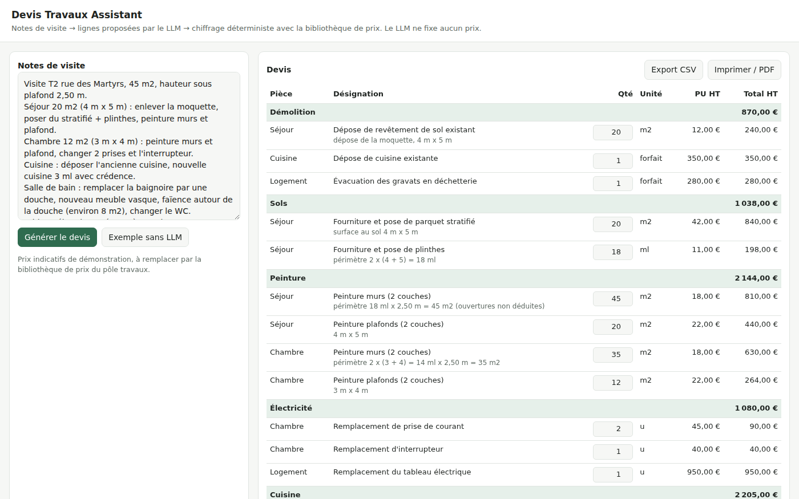

Devis IA Travaux
Devis de rénovation à partir de notes de visite
Transforme des notes de visite en devis de rénovation chiffré. Le LLM propose les lignes depuis une bibliothèque de prix ; chiffrage, TVA et totaux sont calculés par du code testé.
Détails techniques
- Transforme des notes de visite en texte libre en devis de rénovation chiffré.
- Le LLM propose les lignes à partir d'une bibliothèque de prix (codes, quantités, hypothèses de calcul explicites) mais ne fixe aucun prix : chiffrage, TVA, totaux et contrôles sont déterministes et testés.
- Les points incertains sont signalés (à chiffrer, questions à poser), les quantités restent modifiables, et le devis s'exporte en CSV ou PDF ; appelable depuis n8n via une API REST.
- Python, FastAPI, LLM tool calling, Automation, n8n, Pydantic, Docker, CI.